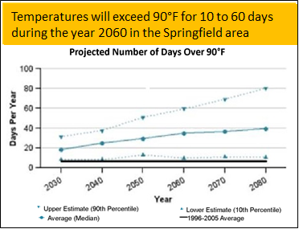
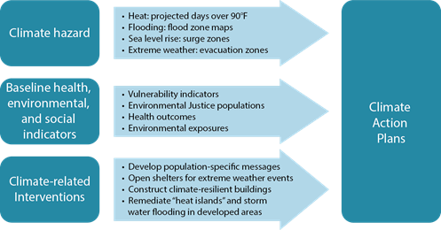

| Printer Friendly Version | |||

A Newsletter of the Massachusetts Department of Public Health Bureau of Climate and Environmental Health |
|||
|
2020 Volume 3, Issue 1 News and Updates Content update: Content update:
Featured Topic: Climate-Enhanced Community Profiles
The Massachusetts Environmental Public Health Tracking (MA EPHT) Program recently released version 2.0 of its popular Community Profiles. This new version includes more climate change-related measures as well as important resources and information about climate adaption strategies. Our Community Profiles provide a snapshot of locally tailored environmental health, sociodemographic, and climate change data for each of Massachusetts' 351 communities. They are linked to our EPHT database to include up-to-date health and environmental indicators. Profiles can be used to guide public health actions, identify priority groups, and shape policy decisions. The Community Profiles are subdivided into the following topic areas:
Health: Lead poisoning, heart attack and asthma hospitalizations, and pediatric asthma data are included. When possible, health data are stratified by gender and compared to state rates. Environment: Environmental data include air quality indicators for fine particles and ozone, as well as water quality data for a community’s public water system. The profile highlights how changing weather patterns may increase air pollution and how climate-related flooding may impact drinking water. Climate Change: This section shows how data can help a community plan for these changes, and provides additional resources for climate adaptation planning. Climate change is increasing the number of very hot days, and hot days increase the risk of hospital visits for people with chronic conditions including lung, heart, vascular, and kidney diseases. Some medications can also impair the body’s ability to cool itself. Click here to explore the MA EPHT Community Profiles. Data for Climate Action PlansThe MA EPHT website has the tools you need to assess baseline health and environmental conditions in your community. Click the explore maps & tables button to get started. Use advanced settings within the map view to add feature layers that can be concurrently displayed with health data. For example, MassTrack volume 2 issue 1 provides a tutorial to view rates of carbon monoxide poisoning within populations that are most vulnerable to climate change hazards. Together, these data sets can be used to identify communities with populations that may be especially vulnerable to carbon monoxide poisonings during cold weather or power outages. Take a look at the tutorials for step-by-step instructions to help you explore our data - data that help a community plan for climate-related interventions. |
|||
|
 Data update: New data are available for:
Data update: New data are available for: